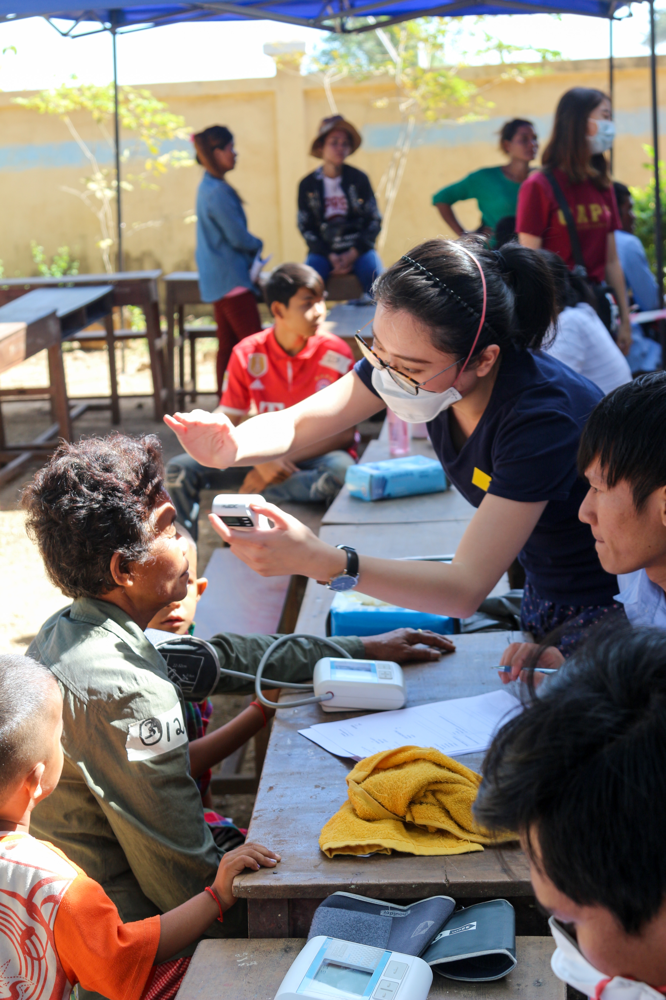
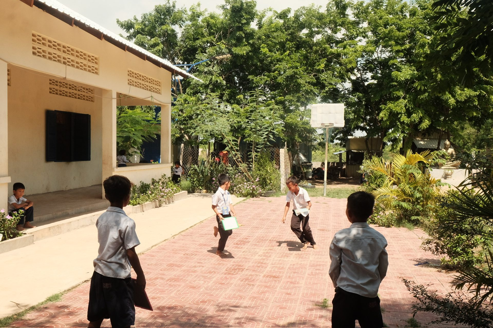

An overseas community service project organized by medical students from the Yong Loo Lin School of Medicine, National University of Singapore.
Our InitiativesProject Battambang was founded in 2010 by five Year 2 medical students under the mentorship of Dr Ong Yew Jin. What began as a small student-led initiative in Poipet has since grown into a long-standing overseas community involvement project committed to healthcare, education and community engagement in Cambodia. For over a decade, Project Battambang has worked alongside local partners, healthcare professionals and Cambodian student volunteers to support communities in Poipet. Our work has included health screenings, health education, door-to-door groundwork, school engagement and the Light-A-Dream Scholarship, which supports students in continuing their education. At the heart of Project Battambang is a belief in sustainable, locally grounded service. Beyond providing short-term support, we aim to listen closely, build lasting relationships and strengthen existing community systems. Our initiatives are shaped by the needs of the communities we serve and guided by our values of love, integrity, beneficence, respect, accountability and sustainability. As Project Battambang enters a new phase, we continue to hold our roots in Poipet closely. Due to current safety concerns, our recent efforts have focused on groundwork in Phnom Penh and surrounding communities, where we are exploring new partnerships and future initiatives in consultation with our Cambodian counterparts and local stakeholders. While the project’s direction may continue to evolve, our purpose remains the same: to serve with humility, learn from the communities we meet, and work towards better health, education and opportunity together.
We envision an independent community where everyone has the liberty and means to hope for and achieve a better future together.
We resolve to improve the provision of healthcare and education through partnerships and supporting the local systems, and to empower youth to effect greater social awareness and responsibility within the community.
Core principles guiding our student volunteers and community partnerships in Cambodia.
Serving with empathy and genuine care for the communities we meet.
Upholding ethical standards, transparency, and accountability in all operations.
Prioritizing the well-being and long-term health of our beneficiaries.
Listening closely to local needs and honoring Cambodian culture and partnerships.
Maintaining strict financial, clinical, and operational transparency.
Building enduring healthcare pathways and educational opportunities.
Sustainable community health screenings, education scholarships, and clinical referral pathways in Cambodia.

Comprehensive clinical triage, doctor consultations, chronic disease monitoring, and pharmacy dispensary.
Learn MoreHygiene workshops, preventive health modules, school outreach, and student scholarships.
Learn More
Transparently documenting our annual trip findings, clinical statistics, financial statements, and community impact.
Learn MoreInvesting in youth through the Light-A-Dream Scholarship, School Support Programme, and community hygiene education.
Learn MoreTransparently documenting our annual trip findings, clinical statistics, financial statements, and community impact.
Learn More